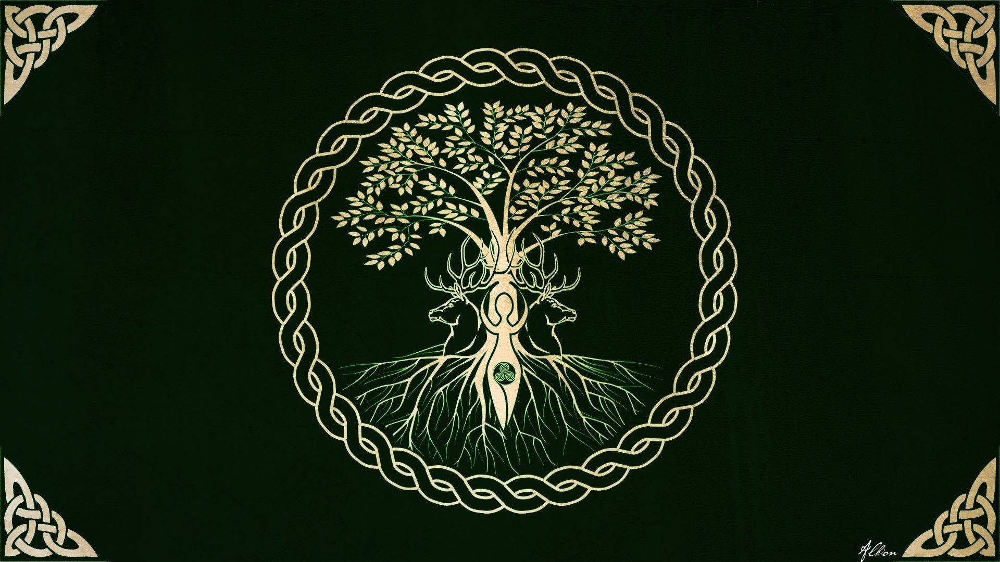
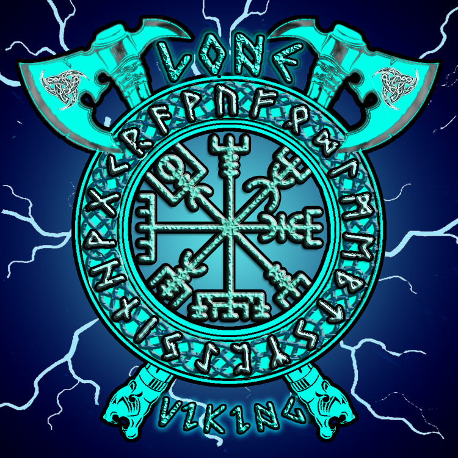

The Offical Home of
Lone Viking
I'm a Streamer

About

About Lone Viking & The Myth
Viking was born to a humble fisherman’s family in the coastal village of Hrafnfjord. From an early age, he felt the call of the sea and the whisper of ancient gods. His father, Bjorn, taught him the ways of the sword, and his mother, Ingrid, instilled in him a love for the sagas and the old runes. But tragedy struck when a band of marauders, led by the fearsome Ragnar the Bloodaxe, raided their village. Viking’s parents were slain, and their longhouse burned to the ground. With vengeance burning in his heart, Viking swore an oath to Odin himself: to become a force of reckoning against those who preyed upon the innocent.
The Lone Path
Viking wandered the frozen wilderness, clad in furs and wielding a battle-axe. His face bore the scars of countless skirmishes, and his eyes held the weight of loss. He became known as Lone Viking, for he traveled alone, seeking justice and redemption. His exploits echoed through the mead halls and around the hearthfires. He rescued kidnapped maidens from troll-infested caves, battled frost giants atop snow-capped peaks, and sailed his longship through treacherous storms to confront sea serpents. His war cry—“For Hrafnfjord!”—rang across the fjords, inspiring hope in the hearts of the oppressed.
The Runeblade
One fateful night, during a blizzard, Viking stumbled upon an ancient burial mound. Within its icy depths, he discovered a sword unlike any other—a blade forged by the gods themselves. Its hilt bore intricate runes that glowed with an otherworldly light. Viking claimed it as his own, dubbing it Frostfang. With Frostfang in hand, Lone Viking’s power grew. The blade cut through iron and ice alike, and its whispers guided him toward forgotten crypts and hidden relics. He learned to harness the magic of the runes, summoning storms and healing wounds with a mere touch.
The Final Battle
Ranger the Bloodaxe, now a warlord ruling over a vast horde, heard of Lone Viking’s exploits. He challenged Viking to a duel—a battle that would decide the fate of Nordheim. The two warriors clashed on the frozen shores of Skaldheim, their swords ringing like thunder. The fight was brutal, each blow fueled by years of pain and vengeance. But in the end, it was Frostfang that prevailed. Viking drove the blade through Ragnar’s heart, ending the tyrant’s reign. As Ragnar fell, he whispered a cryptic prophecy: “Lone Viking, your destiny lies beyond the northern lights.”
My Friends

My Twitch Stream
Watch Right Here